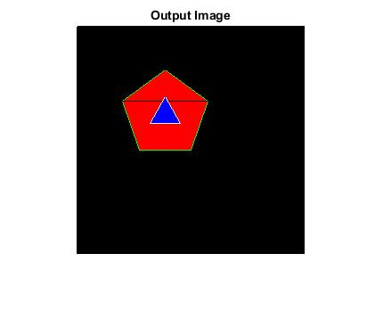

POLYGON_CVIP
polygon_cvip() - create polygon image
Contents
SYNTAX
OutIma = polygon_cvip(ImSize,sides,radius,center,color,varargin)
Input Parameters include:
- ImSize - 2 element array dictating the size of the image.
- radius - The distance from the center location to each vertex
- colors - 3 element array dictating the color of the polygon
- outline_color - 3 element array for optional outline color
- varargin - If you want to place another polygon in the image
Output Parameters include:
- OutIma - output result
DESCRIPTION
This function creats polygon with different colors and size
REFERENCE
1. Scott E Umbaugh. DIGITAL IMAGE PROCESSING AND ANALYSIS: Applications with MATLAB and CVIPtools, 3rd Edition.
EXAMPLE
%Read image % Calling function OutIma = polygon_cvip([256 256],5,50,[100 100],[255 0 0],[0 255 0]) OutIma = polygon_cvip([256 256],3,20,[100 100],[0 0 255],[255 255 255],OutIma); % Display output image figure; imshow(OutIma);title('Output image');
CREDITS
Author: Joey Olden, October 2019
Updated by : Hridoy Biswas, July 2020
Copyright © 2017-2018 Scott
E Umbaugh
For updates visit CVIP Toolbox Website